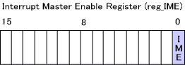
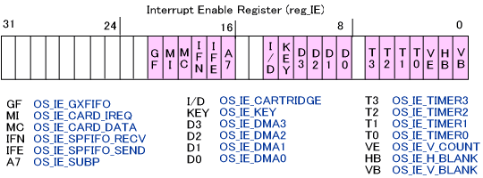
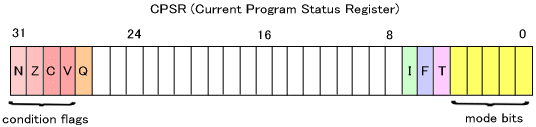
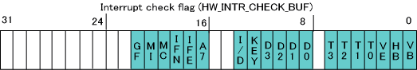
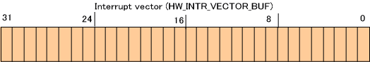
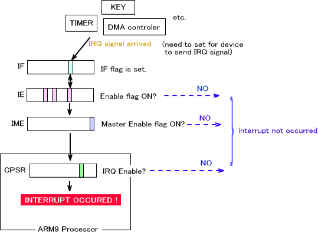
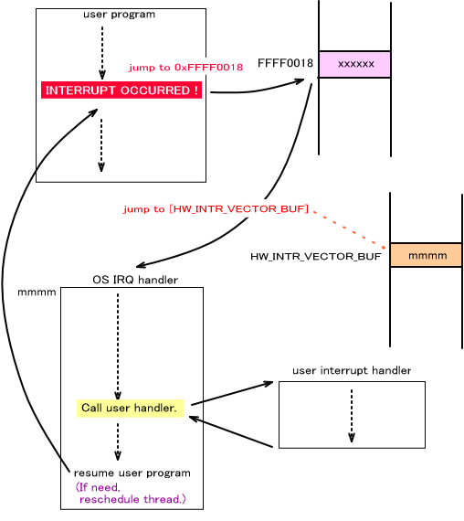
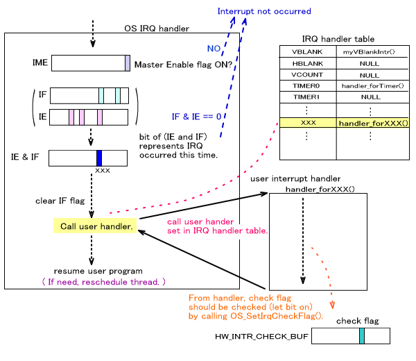

割り込みは現在実行中のプログラムを一時中断し、より緊急性の高いプログラムを実行して元のプログラムに戻るための機構です。
システムやハードウェアの状態によってすぐに特定の処理を行なわなければならない場合、割り込みを使用しなければ一定期間ごとに状態を調べ、条件合致で処理を行なうというポーリング方式を採ることしか出来ませんが、割り込みを使用すると、条件を満たせば予め設定されたプログラムを即座に実行するという処理を行なうことが出来ます。この機構を使用すれば、ポーリング方式よりも高い即時性が期待できますし、何よりメインプログラムは自分の処理に専念することができます。
このドキュメントでは割り込みを取り扱うための関数について説明します。
割り込みの要因
割り込みが発生する要因は様々で、ARM9 と ARM7 で異なります。ARM9 では以下の要因で割り込みが発生します。
| OS_IE_V_BLANK | Vブランク割り込み |
| OS_IE_H_BLANK | Hブランク割り込み |
| OS_IE_V_COUNT | Vカウンター割り込み |
| OS_IE_TIMER0 | タイマー0割り込み |
| OS_IE_TIMER1 | タイマー1割り込み |
| OS_IE_TIMER2 | タイマー2割り込み |
| OS_IE_TIMER3 | タイマー3割り込み |
| OS_IE_DMA0 | DMA0割り込み |
| OS_IE_DMA1 | DMA1割り込み |
| OS_IE_DMA2 | DMA2割り込み |
| OS_IE_DMA3 | DMA3割り込み |
| OS_IE_KEY | キー割り込み *1 |
| OS_IE_CARTRIDGE | カートリッジIREQ/DREQ割り込み |
| OS_IE_SUBP | ARM7割り込み |
| OS_IE_SPFIFO_SEND | ARM9・ARM7間送信FIFOエンプティ割り込み |
| OS_IE_SPFIFO_RECV | ARM9・ARM7間受信FIFOノットエンプティ割り込み |
| OS_IE_CARD_DATA | カードデータ転送終了割り込み |
| OS_IE_CARD_IREQ | カードIREQ割り込み |
| OS_IE_GXFIFO | ジオメトリコマンドFIFO割り込み |
*1 キー割り込みはハードウェアの仕様上、使用しないで下さい。ただし、スリープからの復帰に使用することは可能です。
割り込み関連のレジスタとワーク領域
全ての割り込みのイネーブル・ディセーブルを切り替えるマスターイネーブルフラグはレジスタ
reg_IME (0x04000208) にあります。このビットが1 ならばイネーブルで、0 ならばディセーブルです。このフラグを操作する関数は
OS_EnableIrq(), OS_DisableIrq(), OS_RestoreIrq() です。

割り込み発生の許可は、割り込み要因ごとに指定でき、I/O レジスタの reg_IE (0x04000210)
で行ないます。ビットが1 のものがイネーブルとなっている割り込み要因です。このビットを設定・取得する関数は
OS_SetIrqMask(), OS_GetIrqMask(), OS_EnableIrqMask(), OS_DisableIrqMask()です。( Set関数と Enable関数の違いに注意して下さい )

割り込みリクエストレジスタ reg_IF (0x03000214) の各ビットは、対応する割り込みが発生したときに
1 になります。割り込みと各ビットの関係は reg_IE と同じです。このフラグを設定・取得する関数は
OS_ResetRequestIrqMask(), OS_GetRequestIrqMask() です。
さらに、ARM9プロセッサのステータスレジスタ CPSR (Current Program Status
Register) に、IRQ をイネーブルにするかどうかのビットがあります。( システム(概要)を参照) このレジスタの I フラグが 1 のときに IRQ はディセーブルとなり、0
のときはイネーブルとなります。この「割り込み」カテゴリではなく「システム状態」カテゴリに含まれますが、このステータスを変更する関数は
OS_EnableInterrupts(), OS_DisableInterrupts(), OS_RestoreInterrupts()です。

割り込みが発生したときに、割り込みハンドラでその割り込みが発生したことをチェックしておくためにチェックフラグ領域が設けてあります。この領域は
DTCM 上にあります。割り込み要因と各ビットの関係は reg_IE と同じです。チェックフラグを設定・取得する関数は、OS_SetIrqCheckFlag(), OS_ClearIrqCheckFlag(), OS_GetIrqCheckFlag()です。

割り込みはプロセッサ例外の一種です。システムは DTCM 上にある割り込みベクタ
HW_INTR_VECTOR_BUF に格納されているアドレスにジャンプします。通常は OS
の IRQ ハンドラのアドレスが格納されていますが、ユーザが独自割り込みルーチンを使いたい場合はここを書き換えることになります。

割り込み発生までの流れ
デバイス等からの割り込みの通知は、下の図のような流れでプロセッサに到達します。

指定のデバイスに対し、割り込みを発生させるように設定してあれば、そのデバイスの割り込み条件を満たしたときに、対応する IF のビットが 1 になります。
1 になった IF のビットの割り込み要因が IE で許可されていなければ割り込みは発生しません。また、IME がディセーブルであれば割り込みは CPU に通知されません。ここまでの条件を満たせば割り込み通知がARM9プロセッサに到達しますが、CPSR の IRQフラグが0 (イネーブル)である場合にIRQ割り込みが発生します。1(ディセーブル)であった場合は IRQ割り込みは遅延されます。
IRQ割り込みは、ARMプロセッサの例外の一種 ( IRQ 例外 ) です。詳細は 例外(概要) を参照してください。
IRQ 例外が発生したとき、ARM9 プロセッサはプログラムを中断して 0xFFFF0018 にジャンプします。下の図を参照してください。

0xFFFF0018 アドレスにジャンプした後、DTCM の一領域である HW_INTR_VECTOR_BUF に格納されているアドレスに制御が移ります。これは通常 OS の IRQハンドラのアドレスとなっています。ユーザが IRQ ハンドラを独自に作成する際は、HW_INTR_VECTOR_BUF を書き換えてください。IRQ ハンドラの中からは、事前に登録しておいたユーザの割り込みハンドラが呼び出されます。IRQハンドラから戻った後は、割り込みが発生したアドレスの次からプログラムを再開します。( ただし、スレッドが切り替わることもあります。スレッド(概要) を参照 )
OS の IRQ ハンドラ内の処理をさらに詳しく説明します。

ハンドラの最初では IME がイネーブルかどうかを調べ、イネーブルでなければ何もせずに戻ります。次に IE と IF の論理積をとり、これが 0 であれば何もせずに戻ります。0でなければ、1 となっているビットが今回処理する割り込みということになります。ここで IME と IE と IF を調べるのは、I/O レジスタにアクセスして割り込み禁止処理や割り込み要因の変更処理をしている間にも、その変更より先に割り込み信号がプロセッサに入ることがあるからです。ここでチェックを行なうことにより、正確に I/O レジスタの設定に準じることが保証できます。
その後の流れを説明します。先ほど計算した IE と IF の論理積の結果、1 となっているビットに対応する割り込みハンドラを呼び出します。このハンドラは、予めユーザが IRQ テーブルに登録しておきます。IRQ ハンドラからはこのテーブルを参照してユーザの割り込みハンドラのアドレスを取得します。
ユーザの割り込みハンドラから戻った後、ユーザプログラムに復帰します。ただし割り込みハンドラ内でスレッドの切り替えが発生するような事象が生じていれば、スレッドのリスケジューリングが行なわれます。( スレッド(概要) 参照 )
なお、ユーザの割り込みハンドラの中では、割り込みに対応するチェックフラグをセットしてください。このフラグは他のOS関数で使用されますが、その関数を使わない場合はチェックフラグをセットする必要は本来ありません。しかし個別に処理を変えることで実際に必要な個所で記述し忘れることもあるかもしれませんので、問題がなければ常に割り込みに対してはセットすることをお奨めします。(
OS_SetIrqCheckFlag() 参照 )
割り込みのイネーブル・ディセーブル
以下の関数は全ての割り込みのマスターイネーブルフラグを操作します。
OS_EnableIrq(), OS_DisableIrq(), OS_RestoreIrq()
システム状態の割り込みイネーブル・ディセーブル
詳細は システム(概要)を参照して下さい。以下は、「割り込み」カテゴリではなく「システム」カテゴリの関数です。
これらの関数で CPSR のステータスを変更することが出来ます。
OS_EnableInterrupts(), OS_DisableInterrupts(), OS_RestoreInterrupts()
割り込み要因の設定
以下の関数で割り込み要因を設定・取得することが出来ます。
OS_SetIrqMask(), OS_GetIrqMask(), OS_EnableIrqMask(), OS_DisableIrqMask()
割り込みリクエストフラグの操作
以下の関数で割り込みリクエストフラグを操作することが出来ます。
OS_ResetRequestIrqMask(), OS_GetRequestIrqMask()
割り込みハンドラの設定
以下の関数で割り込みハンドラを設定・取得することが出来ます。
OS_InitIrqTable(), OS_SetIrqFunction(), OS_GetIrqFunction()
割り込みチェックフラグの操作
以下の関数で割り込みチェックフラグを操作します。
OS_SetIrqCheckFlag(), OS_ClearIrqCheckFlag(), OS_GetIrqCheckFlag()
割り込み待ち
割り込みが発生するまで、ウェイトするという目的で次の関数が用意されています。
OS_WaitIrq(), OS_WaitAnyIrq(), OS_WaitInterrupt()
このうち OS_WaitIrq() 、 OS_WaitInterrupt() は引数で指定した割り込みを待ちます。
これに対し、OS_WaitAnyIrq() はあらゆる割り込みを待ちます。
OS_WaitIrq() と OS_WaitInterrupt() の違いは、割り込みを待つ際の動作です。OS_WaitIrq() はコンテキストを切り替えて他のスレッドに処理を移しますが、OS_WaitInterrupt() は OS_Halt() を呼んでその場で停止しますのでスレッドの切り替わりは発生しません。スレッドシステムを使用していない場合は両者の違いはありません。
システムコールには Vブランクを待つための SVC_WaitVBlankIntr() という関数があります。この関数はスレッドを切り替えません。
これらの割り込み待ち関数の内部では、OS_Halt() で一時停止状態になっていたり他のスレッドに処理を明け渡していますが、割り込みが発生して実行状態になったときに、発生したのが指定の割り込みだったかどうか判定するために、割り込みチェックフラグを参照します。そのため割り込みハンドラでは、割り込みチェックフラグをセットする必要があります。
Vブランクカウンタについて
Vブランク割り込みを利用したVブランクカウンタの値を取得する以下の関数が用意されています。
内部では、ARM7 が常にVブランク割り込みをイネーブルにしておき、割り込みの回数をメインメモリの共有領域に書き込みます。ARM9 のその命令は、共有領域に書かれた値を返します。
2005/03/08 用語統一 [割込み] → [割り込み]
2004/12/14 用語や語尾など修正
2004/12/08 OS_IE_KEY についての注意を追加
2004/11/17 初版